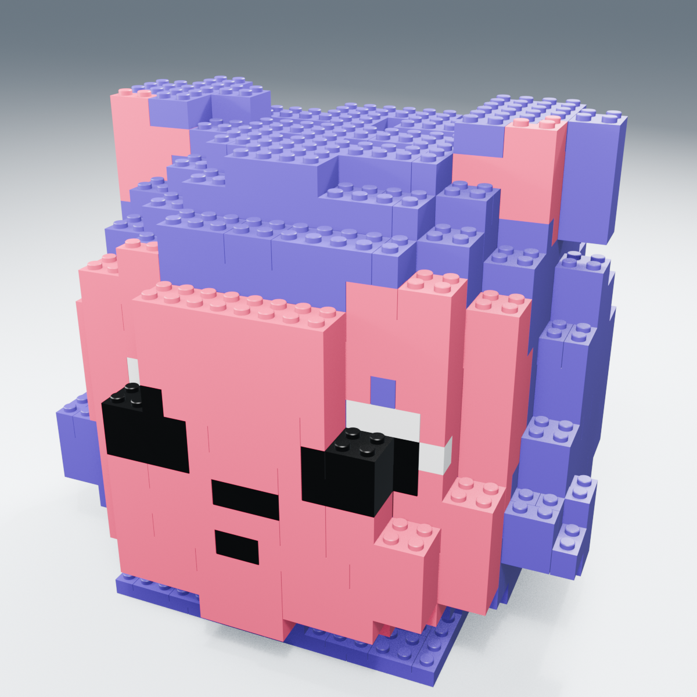
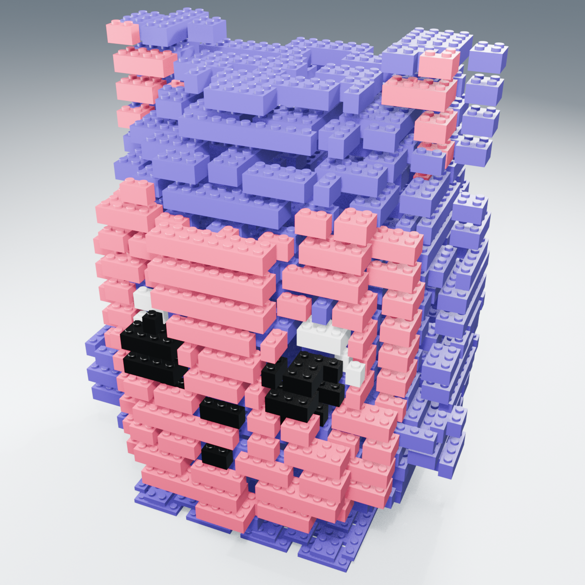
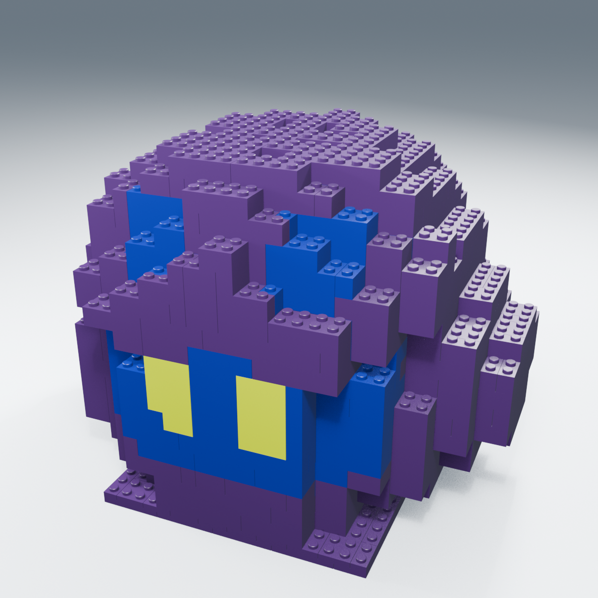
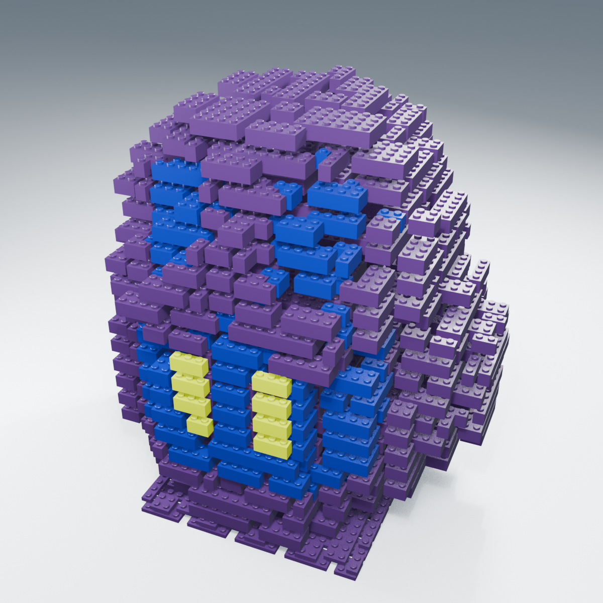
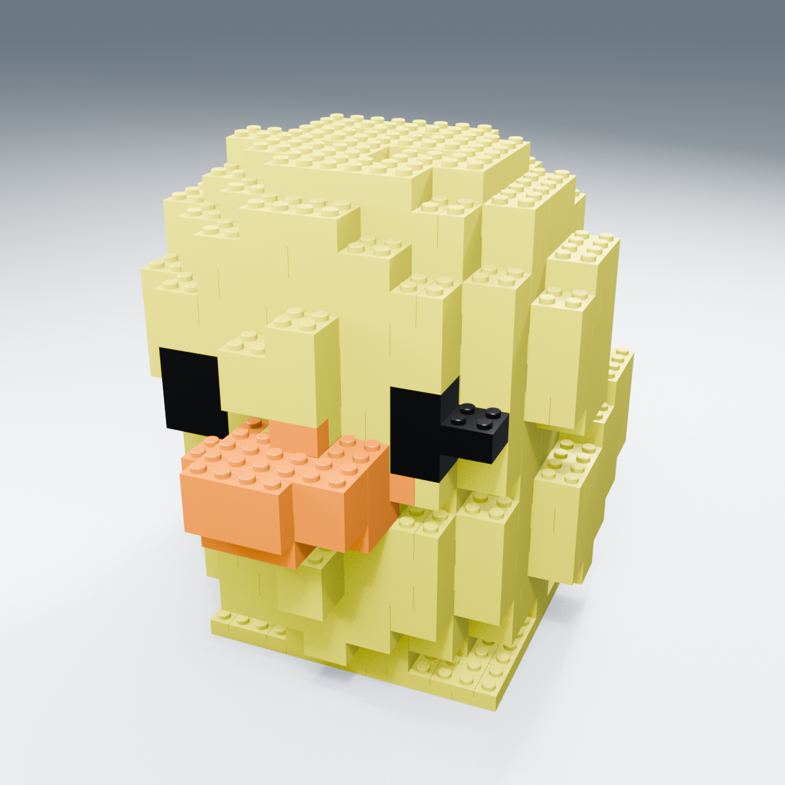
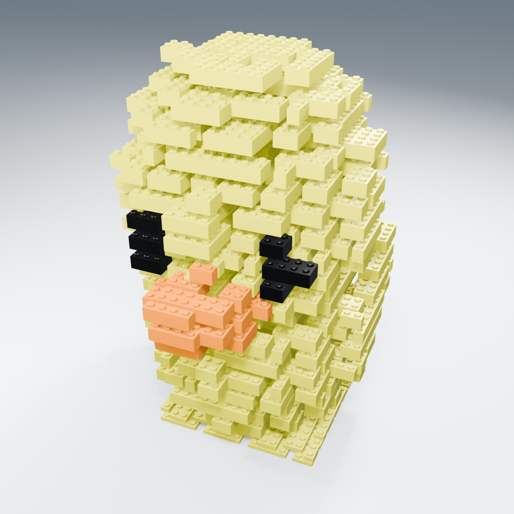

{kind=link}
MONA · practical 8 mm
{kind=link}

519 parts · 68 types · 181.0 mm
Old r2 13,434 → r3 519. Small 1×1 exceptions: 5.
分解表示 / Exploded

r2 → r3 比較 · Blender · Native assembly · BOM · Type/color quantities
DIGITAL PROTOTYPE / NOT SLICED / 実物未検証 / 全数印刷は保留
旧r2は「小さく扱いにくい」「穴がプラスチックで埋まる」実物問題の報告があり、新しい接合方式へ改訂しました。
新版が実物試験に合格したという意味ではありません。
個別に組み立てる8 mmグリッドの部品です。9.6 mmブリックと3.2 mmプレート、約4.8 mmの突起、開いた下面の壁・筒・リブを使用します。 他作品の私用銘板・完成品・画像をコピーせず、原型3体の配色と認識できる特徴を独立に再構成しています。
完成/分解の比較画像 / Assembled and exploded comparison

519 parts · 68 types · 181.0 mm
Old r2 13,434 → r3 519. Small 1×1 exceptions: 5.

r2 → r3 比較 · Blender · Native assembly · BOM · Type/color quantities

695 parts · 86 types · 181.0 mm
Old r2 3,021 → r3 695. Small 1×1 exceptions: 10.

r2 → r3 比較 · Blender · Native assembly · BOM · Type/color quantities

413 parts · 56 types · 181.0 mm
Old r2 10,311 → r3 413. Small 1×1 exceptions: 0.

r2 → r3 比較 · Blender · Native assembly · BOM · Type/color quantities
図は実CADメッシュの断面で、スライス経路ではありません。スタッドは筒の穴へ押し込むのではなく、外壁・筒の外側の間に入ります。 市販ブリック互換性、保持力、FDMでの確実な嵌合は保証しません。
9部品の新版試験セットです。下記の幾何3MFまたはSTLのどちらか一方を使います。
Trial geometry 3MF · Trial geometry STL · Editable FreeCAD trial · Small trial bundle ZIP · 試験手順 / Trial instructions
最後に報告された装着ノズルは0.2 mm、0.4 mmも比較候補です。実際のノズル・PLA・プレートをスライスするPCで確認してください。 このデータは設定入りプリンタープロジェクトやG-codeではなく、時間・質量・支持材は未検証です。
モデル全数の色別プレートも配置データとして収録しますが、小型試験を確認する前の全数印刷は保留です。 全個別部品・共有CAD・組立資料のZIP（NOT SLICED）を展開し、 全体CADはcad/libraries/とcad/assemblies/の相対位置を保って開きます。 全STL/STEPと色別3MFを含みます。画像・動画・Blender・ブラウザー用の重複メッシュJSONは個別配布です。
{kind=link}
{kind=link}
{kind=link}
{kind=link}
{kind=link}
{kind=link}
{kind=link}